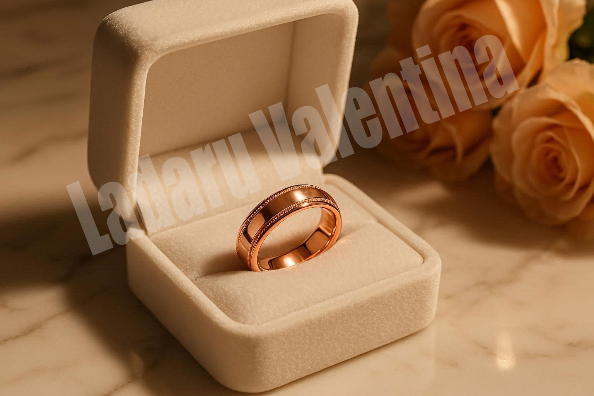
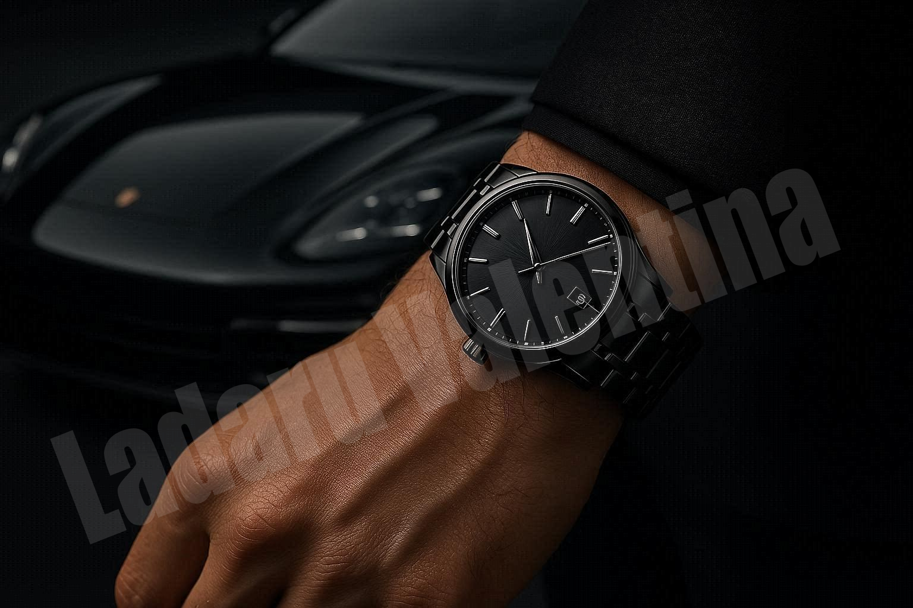
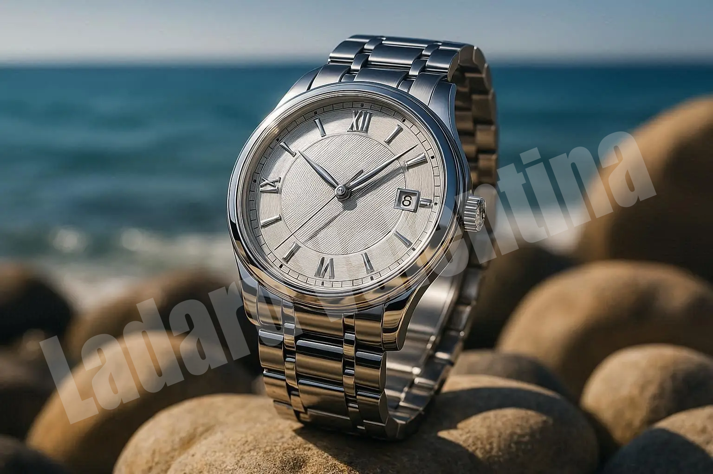
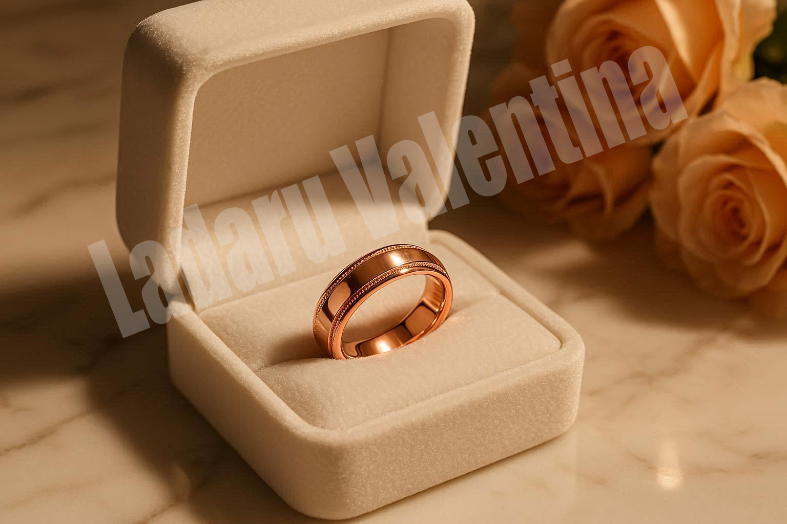
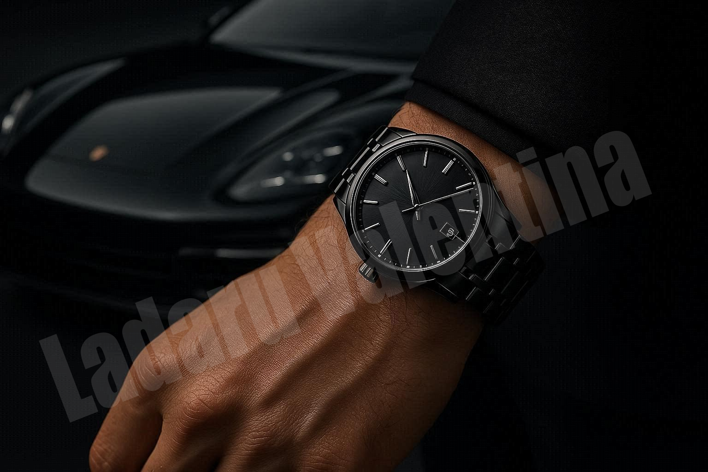
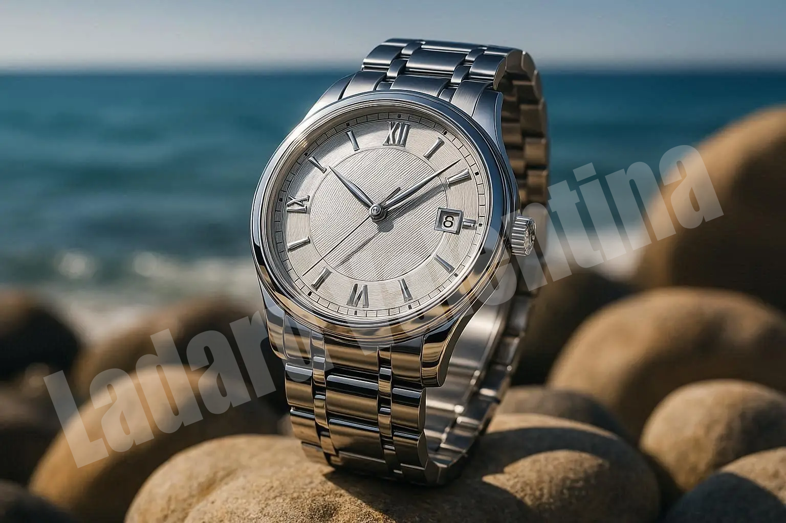

AI Projects
A showcase of AI art , photography and 3D models generated with my prompts.
3D Model - Cyberpunk 1# (Video Game Buildings)
ꕤ Downloadable : fbx, obj, glb, usdz, stl, blend, 3mf
ꕤ Can be used in: animations, unity, unreal engine
ꕤ Topolgy: Triangle
ꕤ Faces: 779,941
ꕤ Verticles: 445,048
3D Model - Amethyst (Object/Collectable)
ꕤ Downloadable : fbx, obj, glb, usdz, stl, blend, 3mf
ꕤ Can be used in: animations, unity, unreal engine
ꕤ Topolgy: Triangle
ꕤ Faces: 584,997
ꕤ Verticles: 324,179
3D Model - Werewolf Bust (Video Game Bust)
ꕤ Downloadable : fbx, obj, glb, usdz, stl, blend, 3mf
ꕤ Can be used in: unity, unreal engine
ꕤ Topolgy: Triangle
ꕤ Faces: 910,454
ꕤ Verticles: 495,426
3D Model - Orc Bust (Video Game Bust)
ꕤ Downloadable : fbx, obj, glb, usdz, stl, blend, 3mf
ꕤ Can be used in: unity, unreal engine
ꕤ Topolgy: Triangle
ꕤ Faces: 824,849
ꕤ Verticles: 453,335
Professional Ads
 





ꕤ Themes: Luxury, Gold and White, Wedding, Gothic, Flowers, Professional Generations